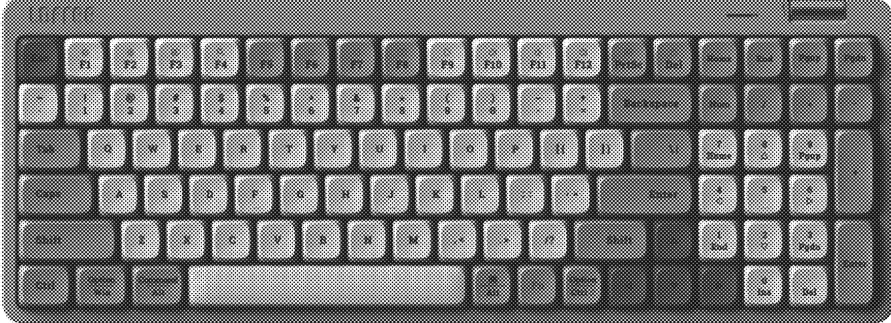
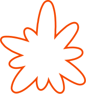
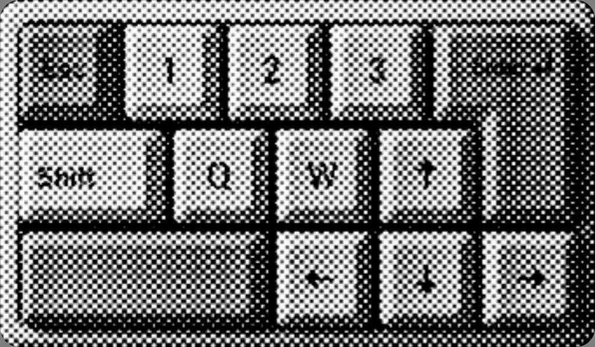
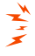

I'm Saumya!
I build how things feel, not just how they look.
This is the keyboard I build everything on.
Try typing!!




Psst, these keys work. Try one ;)
The Ones I’d Show You First
Selected Work
Smaller, Still Loved
A Few More>>
About Me
(Real Intro)

Hey! I’m Saumya, a designer from Udaipur. If you catch me smiling at nothing, I’m probably imagining something ridiculous.
I’ve been making things for as long as I can remember: paintings, sketches, crafts, crochet, and the occasional best-out-of-waste project. Outside of design, you’ll find me reading young adult fiction, watching movies, running or playing basketball.
Experience
-
Different LabsMay–Jul 2026
Product Designer
-
WebanixAug–Oct 2022
Digital Marketing Intern
Education
-
Bachelor of Design2023–2027
Indian Institute of Technology Guwahati